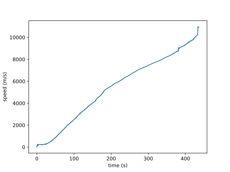
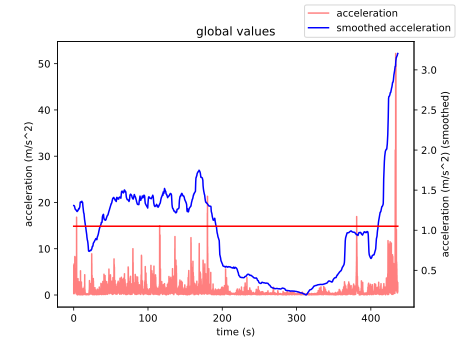

Rapport d'analyse
Table of Contents
1. Imports
%matplotlib ipympl from ipywidgets import * from matplotlib import pyplot as plt import numpy as np import pandas as pd import scipy
2. Ouverture du fichier et extraction des colonnes
data = pd.read_csv("data2.csv")
x = data["Linear Acceleration x (m/s^2)"]
y = data["Linear Acceleration y (m/s^2)"]
z = data["Linear Acceleration z (m/s^2)"]
absolute = data["Absolute acceleration (m/s^2)"]
time = data["Time (s)"]
3. Démonstration du drift de la vitesse intégrée à partir de l'accélération
Malheureusement les valeurs de l'accéléromètre ne sont pas centrées sur 0 au repos, ce qui signifie qu'en intégrant les dites valeurs pour obtenir les vitesses de la personne au fil du temps, on obtient un graphe avec un drift.

Figure 1: Tentative pour déterminer les vitesses en intégrant les accélérations
def integrate(frame):
frame = scipy.integrate.cumulative_trapezoid(frame)
return frame
x_speed, y_speed, z_speed = (integrate(frame) for frame in (x, y, z))
speed = np.sqrt(x_speed**2 + y_speed**2 + z_speed**2)
plt.close(1)
fig = plt.figure(1)
ax = fig.add_subplot()
ax.plot(time[:-1], speed)
ax.set_xlabel("time (s)")
ax.set_ylabel("speed (m/s)")
fig.savefig('fig1.svg')
4. Filtrage du bruit pour obtenir une courbe potable
Pour filtrer les données d'accélération et atténuer le bruit, on fait une moyenne glissante (aussi appelée "moyenne roulante").

Figure 2: Accélérations au fil du temps avec les paramètres optimaux trouvés à la main
plt.close(2)
fig2 = plt.figure(2)
def update(n_glob=3200, thresh=1.05, remove_start=700):
fig2.clear()
ax2 = fig2.add_subplot()
ax2.set_title('global values')
ax3 = ax2.twinx()
ax2.set_xlabel("time (s)")
ax2.set_ylabel("acceleration (m/s^2)")
ax3.set_ylabel("acceleration (m/s^2) (smoothed)")
absolute_cp = np.copy(absolute)
absolute_cp[:remove_start] = 0
absolute_smooth = scipy.ndimage.uniform_filter1d(absolute_cp, size=n_glob)
_ = ax2.plot(time, absolute, alpha=0.5, color='red')
_ = ax3.plot(time, absolute_smooth, color='blue')
_ = ax3.plot(time, [thresh]*len(time), color='red')
fig2.canvas.draw_idle()
fig2.savefig('fig2.svg')
update()
interact(update, n_glob=(100, 5000, 100), thresh=(0, 2, .05), remove_start=(0, len(time)-1, 100));
5. Calcul du temps de grimpe
Maintenant on peut regarder les intersections entre la droite d'équation \( y = \text{threshold} \), afin de trouver les instants de début et de fin de déplacement.
tps_grimpe = 193.5 - 33.9 print(tps_grimpe)
=> 159.6 (s)
tps_chute = 437.3 - 410.2
=> 27.1 (s)
Ce temps de chute est largement incohérent […]

Figure 3: Zoom sur la partie du graphe concernant la chute
6. Calcul du ratio de temps en mouvement
n_glob = 3200
thresh = 1.05
remove_start = 700
absolute_smooth = scipy.ndimage.uniform_filter1d(absolute, size=n_glob)
moving_time = time[absolute_smooth > thresh]
moving_ones = np.zeros(len(moving_time))
moving_ratio = len(moving_time) / len(time)
print(f"{np.round(moving_ratio*100, 2)} %")
=> 45.54 %